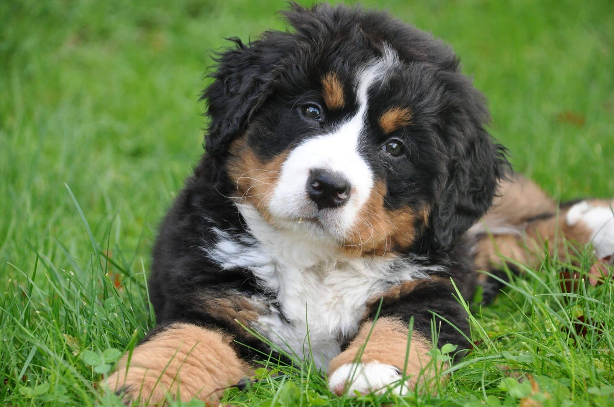

The Bernese Mountain Dog

The Bernese Mountain Dog is a large, sturdy worker who can stand over 27 inches at the shoulder. The thick, silky, and moderately long coat is tricolored: jet black, clear white, and rust. The distinctive markings on the coat and face are breed hallmarks and, combined with the intelligent gleam in the dark eyes, add to the Berner’s aura of majestic nobility. A hardy dog who thrives in cold weather, the Berner’s brain and brawn helped him multitask on the farms and pastures of Switzerland. Berners get along with the entire family and are particularly gentle with children, but they will often become more attached to one lucky human. Berners are imposing but not threatening, and they maintain an aloof dignity with strangers.
The Bernese Mountain Dog is an extremely versatile working dog from the farmlands of Switzerland. They were developed to herd cattle, pull carts, and be watchdogs and loyal companions. They are one of four types of Swiss Mountain Dogs, and the only one with long hair. The Bernese Mountain Dog comes from the canton of Bern, hence their name. They’re a large and sturdy dog breed, with a friendly and calm disposition, and they’re also well-suited to conformation, obedience, tracking, herding, and carting competitions.
A novice dog owner might be attracted to this breed’s friendly disposition, intelligence, and highly trainable nature. However, first-time dog owners should beware. The Bernese Mountain Dog’s size and high energy can make handling difficult. Thus, they don’t appreciate being cooped up in apartments all day. They shed a lot, and they tend to need the drool wiped from their faces every once in a while. Dogs of this breed are great watchdogs, but that also means they have a tendency to bark–loudly. They may want to chase smaller animals and play roughly, even though they are quite gentle when fully mature and trained properly.
Although, for an experienced owner who can match the Bernese’s energy, provide open space, keep up with grooming, and dedicate time and effort to training, this breed will show unconditional love and loyalty. A well-trained Bernese makes an excellent companion that will adore the whole family. They love kids and will even greet newcomers to the home warmly, so long as they’ve had adequate socialization training. There aren’t many breeds with a greater predisposition for friendliness. Therefore, if you’re ready for the challenge, you’ll never regret adopting a Bernese Mountain Dog.